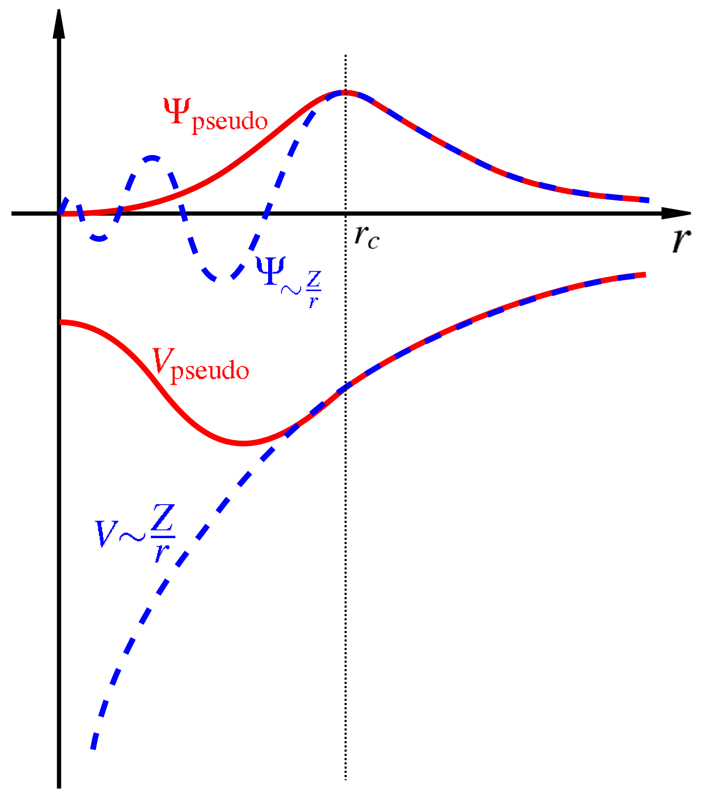
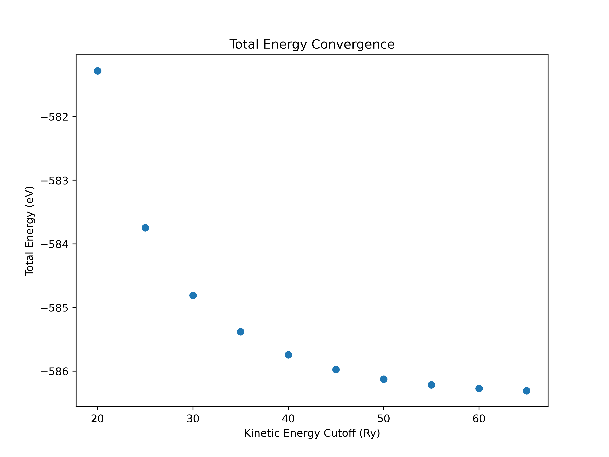
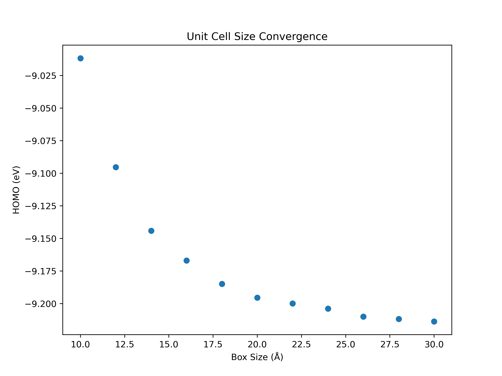
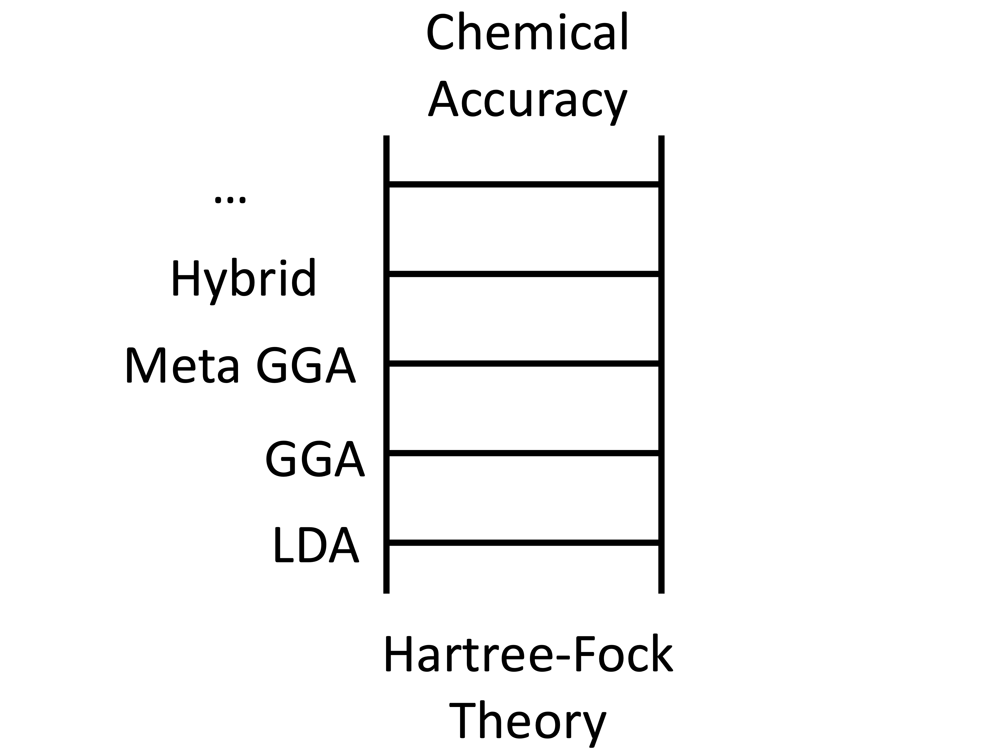
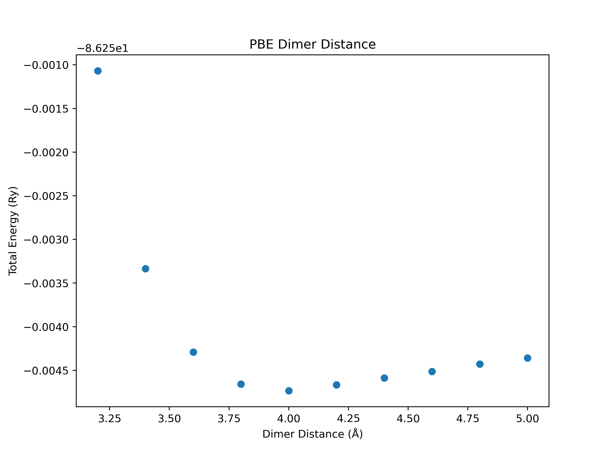
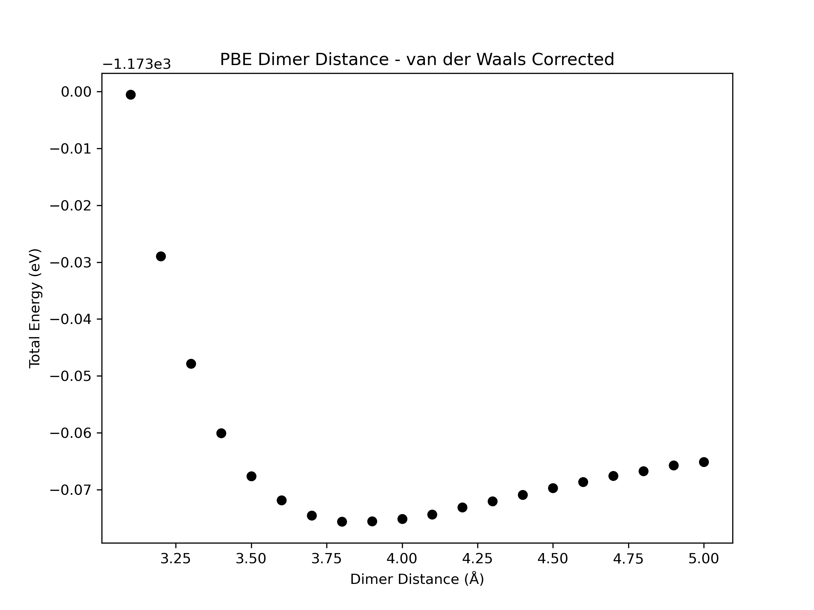

This week we are going to continue on the topic of DFT calculations for isolated molecules. Specifically, we will be focusing on ensuring that our calculations are converged, i.e. that the numerical parameters, such as the plane-wave cutoff, the energy threshold or the box size, are chosen in such a way that physically meaningful results are obtained. Ensuring that convergence is reached is a key step in every DFT study of materials.
If needed, you can refresh your memory of the Linux command line by referring back to Lab 1.
Plane Waves and Pseudopotentials
As discussed in lecture, the Kohn-Sham wavefunctions are expressed as linear combination of plane waves in Quantum Espresso and the total number of plane waves used in the calculation is a convergence parameter. In the region between the atomic nuclei where chemical bonding takes place, the Kohn-Sham wavefunctions are relatively smooth and therefore not too many plane wave are needed to accurately describe them. However, very close to the atomic nucleus the Kohn-Sham wavefunctions vary rapidly (this is a consequence of the requirement that the valence orbital are orthogonal to the tightly bound core orbitals) and lots of plane waves are needed corresponding to a high plane-wave cutoff. Unfortunately, this would make the calculations very slow...
To get around this problem, Quantum Espresso uses pseudopotentials. The idea is to combine the atomic nucleus with the tightly bound core electrons (which do not participate in chemical bonding) into an atomic core whose interaction with the valence electrons is described by the pseudopotential. Since there are no more core electrons in the calculations, the valence electrons do not exhibit rapid variations near the nucleus any more and a low plane-wave cutoff can be used.
In the figure below, you can see the true "all-electron" potential and the resulting "all-electron" wavefunctions (blue-dashed lines) and also the pseudopotential and the corresponding pseudo-wavefunctions (red lines):

Note that the pseudopotentials are generated from DFT calculations of isolated atoms. These calculations require a choice for the exchange-correlation functional. Therefore, a pseudopotential is always generated for a specific exchange-correlation functional. If you want to try out a different exchange-correlation functional, you have to use a different pseudopotential.
The beginning (or "header") of pseudopotential files contains important information about how the pseudopotential was generated, such as which state are considered to be core states and which approximation is used for the exchange-correlation energy.
To start this lab, copy the /opt/MSE404-MM/docs/labs/lab03 to your MSE404 directory.
Task 1 - Pseudopotential File
Navigate to the 01_carbon_monoxide/01_convergence_threshold directory. Here you will see an input file CO.in and two pseudopotential files. Open the pseudopotential file for carbon using the less command.
Which approximation is used for the exchange-correlation functional?
Answer
The local density approximation (LDA). This is found at the top of the pseudopotential file:
1
Info: C LDA 2s2 2p2 VonBarth-Car, l=1 local
Which atomic orbitals are included as valence states and which ones are included in the core?
Answer
The states listed in the pseudopotential file are the valence states. These are:
123
nl pn l occ Rcut Rcut US E pseuo
2S 0 0 2.00 0.00000000000 0.00000000000 0.00000000000
2P 0 1 2.00 0.00000000000 0.00000000000 0.00000000000
The core state are therefore the 1S state.
What is the valence charge of the carbon atom core consisting of the nucleus and the core electrons?
Answer
The valence charge is 4. This is state in the line 4.00000000000 Z valence:
Total Energy Convergence Threshold
In a DFT calculation, the Kohn-Sham wavefunctions which minimize the total energy are found using a self-consistent procedure: one starts with an initial guess for the density, constructs the Kohn-Sham potential and then solves the Kohn-Sham equations to obtain the Kohn-Sham wavefunctions. These can then be used to find a new density and this procedure is repeated until self-consistency is achieved. Usually, we monitor the total energy and stop the self-consistent cycle when its change (relative to the previous iteration) is below a certain threshold. This threshold is a convergence parameter and must be chosen sufficiently small such that physically meaningful results are obtained.
Let's take at a look at the input file for a carbon monoxide (CO) molecule in 01_carbon_monoxide/01_convergence_threshold.
This specifies that we don't want any of the charge density or wavefunction information saved in a file. We specify this just to save disk space :-).
Specifies that the pseudopotentials to use are in the current directory.
ibrav=1 is the bravais lattice type 'simple cubic'.
The lattice parameter for the bravais lattice.
This is the total energy convergence threshold. Successive iterations will have their total energy compared to one another. When this difference is less than the convergence threshold, we deem the total energy to be converged.
The structure of this line is [element name] [element atomic mass] [name of pseudopotential].
Tip: Running Quantum Espressso
Make sure to have loaded the quantum espresso module and its dependencies using the command:
module load quantum-espresso
Task 2 - Convergence Threshold
Make four copies of the CO.in input file named CO_i.in, where i should range from 5 to 8. In each of these files, reduce the order of magnitude of the conv_thr by a factor of 10, i.e. replace conv_thr = 1e-4 with conv_thr = 1e-5 in CO_5.in, etc.
Run the four input files using pw.x e.g. pw.x < CO_5.in > CO_5.out.
What do you expect will happen when you reduce the convergence threshold?
Answer
More iteration in the self-consistent cycle are needed and the calculations take longer. A more accurate value of the total energy is obtained.
Quantum Espresso outputs the number of scf cycles it took for convergence to be achieved. Look for this line in the output file:
1
convergencehasbeenachievedin...
How many iterations did it take each calculation to converge? Is this what you expected?
We could have taken advantage of the grep command here. If you don't remember how to use this command, refer back to Lab 1 for documentation on grep.
Try this again using the grep command.
Hint For Using Grep
grep 'convergence has been achieved in' CO_5.out.
Plane-wave cutoff
In the expansion of the Kohn-Sham wavefunctions, only plane waves with wave vectors whose lengths are smaller than that of the maximum wavevector, \(\bf{G_{\text{max}}}\), are included. This maximum wave vector is specified through the variable ecutwfc which is the kinetic energy associated with \(\bf{G_{\text{max}}}\), i.e. \(\hbar^2 |\bf{G}_{\text{max}|}^2/{2m}\). We must ensure that this cutoff is large enough such that physically meaningful results are obtained.
An example demonstrating the total energy convergence with respect to energy cutoff is shown in the 01_carbon_monoxide/02_kinetic_energy_cutoff directory.
To converge the kinetic energy cutoff we are going to set up a series of input files which are all identical except we systematically increase only the value of ecutwfc and record the total energy.
Task 3 - Kinetic Energy Cutoff
Navigate to the directory 01_carbon_monoxide/02_kinetic_energy_cutoff. Here, you will again see an input file for CO and two pseudopotential files. Make 10 copies of this file named CO_i.in where i ranges from 20 to 65 in steps of 5. Change the ecutwfc variable in these files to systematically increase from 20 to 65 i.e. set ecutwfc to be equal to the number i.
Use pw.x to perform a DFT calculation for each input files.
Check the output file CO_20.out. What is the converged total energy?
Answer
! total energy = -42.74125239 Ry
Check the output file CO_30.out. What is the converged total energy? Is this lower than CO_20.out?
Answer
! total energy = -43.00067775 Ry.
This is lower than the total energy in CO_20.out.
Use grep to extract the total energy from all output files.
These energies are in Ry. Often it is more insightful to convert these values to eV.
Create a text file named data.txt. Copy your results into this file: the first column should be the kinetic energy cutoff in Ry and the second column should be the total energy in eV.
Examine the file data.txt.
You should observe that the total energy decreases as we increase the plane-wave energy cutoff ecutwfc.
At what plane-wave cutoff is the total energy converged to within 0.1 eV of your most accurate result (, i.e. the one obtained for ecutwfc = 65)?
Result
ecutwfc = 55 Ry.
\(E_{tot}^{65} = -586.30894733 \,\text{eV}\)
\(E_{tot}^{55} = -586.21615168 \,\text{eV}\)
\(\Delta E_{tot} = 0.09279565 \,\text{eV}\)
Plot the total energy against the plane-wave cutoff using the python script plot.py by issuing the command:
python3 plot.py
Result

We also discussed above that increasing ecutwfc increases the number of plane waves in the expansion of the Kohn-Sham states. This infomation is stored near the beginning of the output file, in a section that looks like:
The number of plane-waves in our calculation is in the final column PW.
Look for this line in the CO_20.in and the CO_65.in and verify that the number of plane-waves is significantly higher.
Note that:
Different systems converge differently: You shouldn't expect diamond and silicon to be converged to the same accuracy with the same plane-wave cutoff despite having the same atomic structure and the same number of valence electrons.
Different pseudopotentials for the same atomic species will also converge differently. Often (but not always) pseudopotential files will suggest a plane-wave cutoff.
Different calculated physical quantities will converge differently.
If we want to calculate the lattice parameter of a material, don't expect it to be converged to the same accuracy as another parameter, e.g. the bulk modulus.
Warning
You should be particularly careful when calculating parameters that depend on volume, as the number of plane-waves for a given plane-wave cut-off changes when the volume is changed.
Actually, we typically converge the total energy per atom (meV/atom) or per electron (meV/electron). This is due to the scaling of the total energy with system size (number of atoms/electrons). If we have more atoms in our system, the magnitude of the total energy will naturally be larger i.e. the total energy scales with system size. However, the total energy per atom/electron is a normalised quantity, providing a measure of the total energy that is independent of system size, and thus can be compared between systems to make sure you are converged to the same accuracy.
Harder To Converge Orbitals
We can make educated guesses on how easily structures can converge based on the orbitals they contain. For example, molecules containing elements that have d orbitals require much higher kinetic energy cutoffs. This is due to the localised nature of the d orbitals resulting in steper gradients of the wavefucntion and therefore needing much higher energy Fourier components in the plane-wave expansion of the Kohn-Sham states.
Box Size
Quantum Espresso uses periodic boundary conditions (recall that plane wave can only be used as a basis for periodic functions). Therefore, it is not possible to model a truly isolated molecule with Quantum Espresso. The best we can do is model a periodic crystal of molecules whose unit cell is so large that each molecule is not affected by the presence of all other molecules. The size of the unit cell (aka the box size) is therefore a convergence parameter and we must ensure it is sufficiently large so that physically meaningful results are obtained. Unfortunately, increasing the box size also increases the time of the calculations.
Task 4 - Unit Cell Size
Navigate to the directory 01_carbon_monoxide/03_box_size. Here, you will again see an input file for CO and two pseudopotential files. Make 10 copies of this file named CO_i.in with i ranging from 10 to 30 in steps of 2. Edit the A variable in these files to systematically increase from 10 to 30, i.e. set A to be equal to the number i. This increases the size of the unit cell, and thus the distance between periodic images of the molecule.
Use pw.x to perform DFT calculations for these input files.
Take a look at the output file CO_10.out. What is the energy of the highest occupied molecular orbital (HOMO)?
Answer
The HOMO energy can be extracted from the list of Kohn-Sham energies, or alternatively is printed under highest occupied level in the output file.
highest occupied level (ev): -9.0118
Now inspect the output file CO_26.out. What is the energy of the highest occupied molecular orbital (HOMO)? How does this compare to the CO_10.out calculation where the distance between periodic images is much smaller?
Answer
highest occupied level (ev): -9.2100.
Create a text file named data.txt. Place your results here in the format [Unit Cell Size (Å)] [Energy of HOMO (eV)]
At what unit cell size is the HOMO converged to within 0.1 eV of your most accurate run (A = 30)?
Result
A = 14.
This means that CO molecules need to be ~ 14 Å away from one another to have less than 0.1 eV effect on each others HOMO. Note that each CO molecule has a dipole moment which produces a long-ranged potential that affects the other molecules.
Plot the energy of the HOMO against the unit cell size using the python script plot.py by issuing the command:
python3 plot.py
Result

Bash Scripting
You have run a lot of DFT calculations in this lab. Running all of these pw.x commands manually is time consuming. To speed things up we can use a small bash script that will automate running these jobs for us. Bash is a programming language (the one we use to interact with the command line), like python. In the same directory 01_carbon_monoxide/03_box_size you will find a run.sh bash script. Let's quickly examine it.
1234567
#!/bin/bash #(1)!# Run pw.x for each input file sequentiallyforiin{10..30..2};#(2)!dopw.x<CO_$i.in&>CO_$i.out#(3)!done
This tells the compiler that the commands below are bash commands.
Entering a simple for loop going from i=10 to i=30 in steps of 2.
Issue the command pw.x < CO_$i.in > CO_$i.out.
To use this script, just issue the command;
1
./run.sh
Redo Task 4 and verify that you get the same result.
Python Plotting
In Task 3 and 4, we used the code plot.py. This code uses the matplotlib library to plot the results stored in data.txt to visualise the convergence of the total energy as the plane-wave cutoff is increased.
Later in this course you will use python scripts to plot band structures and density of states. You are encouraged to examine and play around with these python codes to develop your coding skills!
Let's take a quick look at plot.py from the 01_carbon_monoxide/02_kinetic_energy_cutoff directory.
######################################################################################################################################################################################################################################################################################################################################################################################################################################## This is a plotting code. Put your data into data.txt in column format. <column 1 = cutoff> <column 2 = total energy> ## To use this code, issue the command: ## python3 plot.py ########################################################################################################################################################################################################################################################################################################################################################################################################################################importnumpyasnpimportmatplotlib.pyplotaspltdefmain():data=np.loadtxt("data.txt")#(1)!ecut,etot=data[:,0],data[:,1]#(2)!plt.figure(figsize=(8,6))#(3)!plt.scatter(ecut,etot)#(4)!plt.xlabel("Kinetic Energy Cutoff (Ry)")plt.ylabel("Total Energy (eV)")plt.title("Total Energy Convergence")plt.show()#(5)!if__name__=="__main__":main()
Loading in the data that is in column format in data.txt.
The first column is the plane-wave cutoff in Ry and the second column is the corresponding total energy in eV.
Initialising the size of our figure. This allows you to control the aspect ratio of the plot.
Scatter plot of ecut vs etot.
After giving python all of the plotting information, we tell it to plot.
Exchange & Correlation Energy Functionals
Recall that in the Kohn-Sham equations we have a term known as the exange-correlation potential. What approximation we choose for this is a key part of DFT. The functional that we use determines how we approximate the many-body interactions between the electrons.
As we discussed earlier, the pseudopotentials that we use are built from DFT calculations of single atoms. In these DFT calculations, an exchange-correlation functional was chosen. Thus, pseudopotentials inherently contain an exchange-correlation approximation.
Choosing an appropriate exchange-correlation functional for the system we want to study is an important consideration in every DFT calculation. This choice can have a big impact the results we obtain from our DFT calculation.
Levels of approximation
There is a hierarchy of exchange-correlation functionals. This is sometimes represented as a ladder called 'Jacob's ladder' whose lowest rung is the LDA with higher rungs being GGAs, meta-GGAs, hybrid functionals and so on.

By default, Quantum Espresso determines which exchange-correlation functional it should use from the pseudopotential files as discussed above. It is possible, however, to override this default by using the input_dft variable in the &system section.
Mixing Approximations
It is generally not a good idea to override the default exchange-correlation functional read from the pseudopotential file. However, sometimes it may be difficult to find pseudopotentials for exotic exchange-correlation functionals.
In 02_argon we will calculate the total energy as function of bond length for a pair of argon atoms using two different approximations for the exchange-correlation functional: first we will use a standard GGA functional and then we will study the effect of using a correction that accounts for van der Waals interactions.
Task 5 - Argon Dimer
Navigate to the directory 02_argon/01_pbe. Here you will see an input file Ar2.in, an argon pseudopotential file, and a python plotting code plot.py.
Find out which approximation for the exchange-correlation functional is used by taking a look at the pseudopotential file.
Answer
This is at the GGA (pbe) level.
Make 10 copies of the input file named Ar2_i.in where i should run from 1 to 10 in steps of 1. In each of these files we want to systematically increase the distance between Ar atoms from 3.2 to 5 in steps of 0.2. Replace xxxx in the ATOMIC_POSITIONS of each file to do this. You should now have files named Ar2_1.in, Ar2_2.in etc with increasing dimer distances. You have been provided with a script run.sh that will automate the running of pw.x.
Run the script run.sh. One finished, store the data in a text file named data.txt in the format: [dimer distance] [total energy].
Examine the script plot.py. Read through the python script and try to understand what each line of code is doing.
At which distance does the argon dimer have the lowest energy?
Result
a = 4.0 Å gives the minimum energy of -86.2547336 Ry
However, the minimum is very shallow.

Argon atoms have full electronic shells. Therefore, they cannot form chemical bonds. They only interact with weak van der Waals interactions. The PBE exchange-correlation functional does not describe these interactions well. To capture them, we will have to introduce a special van der Waals correction.
Navigate to 02_vdw.
Examine the input file Ar2.in. You will see a tag vdw_corr = 'grimme-d3'. This means that we are going to include van der Waals corrections (via a correction term to the total energy).
Go through the same steps as in 01_pbe, making 10 copies of the Ar2.in named Ar2_i.in where i ranges from 1 to 10. Systematically increase the dimer distance over the same range and run the DFT calculations.
At what distance does the argon dimer have the lowest energy?
Result
a = 3.8 Å gives the minimum energy of -86.25537711 Ry. This is in good agreement with the experimental result of 3.76 Å (see Molecular Physics, 103 (15–16), 2031–2045 (2005)).

More Convergence Parameters
So far we have only been dealing with isolated molecules, and thus we have been running our calculations with no \(\bf{k}\) dependence. However, if we are dealing with crystals, which are periodic, then we need to sample the Briouillin zone with 'k points'. This will be covered in Lab 4. The number of k points used to sample the Briouillin zone should also be converged when dealing with periodic crystals.
Summary
In this lab we gained a deeper understanding of the interrelated concepts of plane waves, pseudopotentials and periodic boundary conditions. We also learned about the importance of converging the results of our calculations with respect to the total energy threshold, the plane-wave cutoff and the box size:
Convergence of any physical quantity of interest is achieved by systematically varying the relevant convergence parameters and making sure their values are chosen such that physically meaning results are obtained.
We also learned about the importance of choosing an appropriate exchange-correlation functional for the system we want to study.